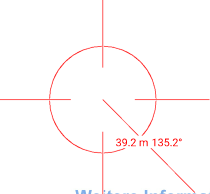
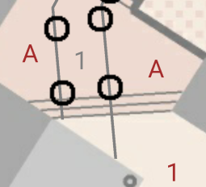
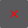
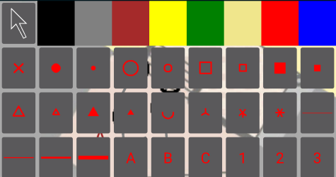
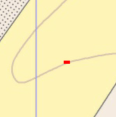
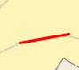
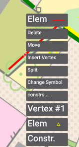
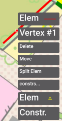
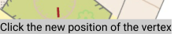
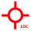

1. Copy OMapScratch.OMapScratch-Signed.apk to your android device
2. On your android-device, click OMapScratch.OMapScratch-Signed.apk to install it.
3. Follow instructions
4. Verify that an app called O-Scratch exists.
1. Create a file called <project>.config on your Windows device (where OCAD is installed)
Example:
<oscratch>
<offset x="2685000" y="1256000" declination="2.27">
<world lat="47.4492980" lon="8.5656916" geoMat00="75412.37" geoMat01="1084.84" geoMat10="-1596.29" geoMat11="111174.40" />
</offset>
<data scratch="Hardwald.xml" symbol="Symbols.xml" symbolscale="0.3" constrtextsize_mm="2.3" constrlinewidth_mm="0.1" elemtextsize_pt="18" search="5">
<constrcolor R="255" G="0" B="0"/>
</data>
<image name="LAS" path="B3_Hardwald 2017_DSM_LasIntensity.jpg" />
<image name="Hangneigung" path="B3_Hardwald 2017_DTM_Hangneigung.jpg" />
<image name="Relief 1" path="B3_Hardwald 2017_DTM_Reliefschummerung.jpg" />
<image name="Relief 2" path="B4_Hardwald 2017_DTM_Reliefschummerung.jpg" />
</oscratch>
where
<offset>: offset of the co-ordinates in the scratch-File to the "real-world" coordinates
<offset declination> (optional): declination of the magnetic north to the map north (degrees)
<offset><world> (optional): Wgs84 co-ordinates (degrees) of offset, together with a local transformation matrix
<data scratch>: name of the file, where the captured data will be stored (will be created by o-scratch)
<data symbol>: name of the file, where the symbols are stored. See description below.
Remark: The units in the symbol-files are in meters
<data symbolscale> (optional): Scale factor of the symbols use for display. Default is 1.
<data elemtextsize_pt> (optional): text size of text elemens. (See symbols and figure below)
<data constrlinewidth_mm> (optional): line width of construction lines. (See figure below)
<data constrtextsize_mm> (optional): text size in mm for texts displayed during constructions. (See figure below)
<data><constrcolor> (optional): color for construction elements. Remark: This color can be adapted in runtime. (See figure below)
<image name>: Name displayed in O-scratch
<image path>: file name of image file. Only jpg-Formats are supported. Use Files with pixel size of less than 5000 x 5000 pixels.
For each image file, the image-World file (.jgw) must exist, too.
You may create these image and world file with OCAD -> Export.
Remark: When working with large image files, split them to several parts
so that not the entire image must be copied to your android device
and that the loading of the image is more performant.
Use some overlap for the files of the same theme, because only 1 image file per time is displayed in o-scratch


Figures: Construction example with color, linewidth and textsize; Elementtextsize;
2. Copy <project>.config, <symbols.xml> and all referenced image files (.jpg) and image world files (.jgw) to one folder on your android device.
Remark: In o-scratch, all used files for one project must lie in one single folder!
1. a) O-Scratch is not open on your device: Start O-Scratch on the android device. A File navigation is displayed
b) O-Scratch is already running: Choose (Navigation bar) -> Load
Remark: The previous project will be save automatically when loading a new project.
If you do not want to save the previous project, close the app.
2. Click a recent <project>.config or browse to <project>.config and click it. The first of the images is displayed.
This option is only available if more than 1 image is defined in the .config file
1. Click LOAD IMAGE. A list of all images is displayed (corresponding to images in <project>.config images). Remark: Use Images with a size of less than 5000 x 5000 pixel
2. Click on any image on the list. The corresponding image will be displayed according to the current spatial extent.
1. Click on "Edit tool" (like ). A list of all available colors and symbols is displayed.
2. (Optionally) choose color. The colors of all symbols in the list are adapted accordingly.
3. Choose symbol or "Arrow Tool". The list is closed and the edit tool is set accordingly.
1. Choose Edit-Tool with a point symbol, i.e.
2. Click on Map (repeatedly). The point symbol is displayed a the clicked point(s)
1. Choose Edit-Tool with a line symbol, i.e.
2. Click on Map to start the line. A small horizontal line is displayed at the clicked point
3. Click the next point(s) on the map. The captured line is displayed.
4. (double) click on the Edit-Tool-Button to finish the current line.
1. Choose Edit-Tool "Arrow Tool"
2. Click on Map. A context menu is displayed near the clicked point and a small rectangle is displayed on the map at the position for which the context menu shall be applied.


For each found geometry (element, vertex of line element, clicked point), an UPPERCASE entry is displayed in the context menu.
Clicking on an UPPERCASE entry toggles the details of the corresponding element or vertex and the context menu is resituated at the chosen geometry.
(In the figures above, VERTEX #1 was clicked, and the new context menu for the vertex appears)
Clicking another entry in the context menu executes the corresponding action. In some cases, a description is displayed in the lower part of the display with an instruction / help.

3. a) Choose the appropriate menu item
b) or click on map or "Edit tool" for no action
If the wgs84 transformation is defined in the config-file, the current position of the is derived from the device location and displayed on the map as a red circle.
If the wgs84 is not defined or incorrect, the location can be synchronised:
1. Chose Edit-Tool "Arrow Tool"
2. Click the map at your current position
3. Chose "Set location" in the context menu (submenu of "Constr" or "Elem"->"Constr...").
"Waiting to receive next location" is displayed in the status line untill the next location is captured by the device,
then a red circle is displayed at the current position.
Hint: Do not move while the device is waiting for the next location.
If the declination is defined in the config-file, the current orientation of the map is derived from the device orientation.
If the declination is not defined or incorrect, the declination can be synchronised:
1. Chose Edit-Tool "Arrow Tool" .
2. Click the map at any point.
3. Chose "Set orientation" in the context menu (submenu of "Constr" or "Elem"->"Constr...").
4. Orientate your the device according to the environment.
5. Click on map. A red arrow (magnetig north) and a thin blackline(declination) is displayed on the map.
When the red arrow matches the direction of the thin black line, the device is oriented correctly.
Remark: The North arrow can be switched on/off in (Navigation bar) -> Show/Hide Compass
1. Click Location button  in the toolbar. The behavior is the same as on clicking on the map, but the click occurs at the current location (displayed by red circle).
1. Click Undo button . The last action (add symbol, add line point, ...) is undone.
1. Click Redo button . The last undo action ist re-done.
Remark: The redo stack is emptied with each "normal" action.
1. Choose (Navigation bar) -> Save. The captured objects are written to <scratch.xml> in the same folder as the <project>.config file.
1. Choose (Navigation bar) -> Load. Executed Actions:
- The current objects are written to <scratch.xml> in the same folder as the current <project>.config file.
- A File navigation is displayed
2. Navigate to the appropriate .config file an click it. Executed Actions:
- If existing, the elements of the new <scratch.xml> file are loaded
- the first image and the loaded elemens are displayed
Remark: Elements with invalid geometry or symbol reference are ignored.
Example of <symbol.xml> file
<?xml version="1.0" encoding="utf-16" ?>
<XmlSymbols>
<Color Id="Bl" R="0" G="0" B="0" />
<!-- Id : Id of the color (used by scratch elements ) R,G;B : Values of [0,255] -->
<Color Id="G" R="0" G="128" B="0" />
<!--
followed by more Colors
-->
<Symbol Id="L1">
<!-- Symbol, Id: Id of symbol (used by scratch elements) -->
<Curve w="1" f="false" s="false" />
<!-- Curve without out geom: -> Line Symbol;
w: Line Width (in meters);
f: (optional, ignored for line symbols): fill geometry
s: (optional, ignored for line symbols): stroke geometry -->
</Symbol>
<Symbol Id="KrF">
<Curve w="0" f="false" s="false" geom=" r 0.0 0.0 10.0" />
<!-- Curve with geom: Point Symbol;
geom: all values in meters. use symbolScale in <project>.config to scale symbols
r <x> <y> <radius>: Circle with center at <x>,<y> and radius <r> -->
</Symbol>
<Symbol Id="ReL">
<Curve w="3" geom=" m -12 -12 l -12 12 l 12 12 l 12 -12 l -12 -12" />
<!-- m <x> <y> : moveto <x>,<y> (start line)
l <x> <y> : lineto <x>,<y> (continue line)-->
</Symbol>
<Symbol Id="K4L">
<Curve w="3" f="false" s="false" geom=" m -10.0 -10.0 l 10.0 10.0" />
<Curve w="3" f="false" s="false" geom=" m 10.0 -10.0 l -10.0 10.0" />
<!-- Symbol with multiple lines -->
</Symbol>
<Symbol Id="TxA" Text="A" />
<!-- Symbol with Text (and no Curve) : Text Symbol -->
<Symbol Id="TxB" Text="B" />
<!--
followed by more Symbols
-->
</XmlSymbols>